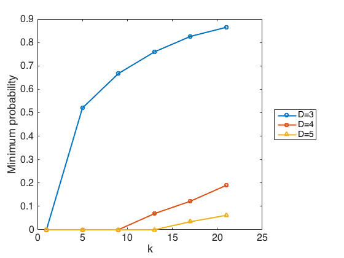

x0 = [1.0 5.0 9.0 13.0 17.0 21.0 ];
y0 = [0.0 0.5200000000000001 0.6672000000000002 0.7595520000000002 0.8257601945600003 0.8647842971648002 ];
x1 = [1.0 5.0 9.0 13.0 17.0 21.0 ];
y1 = [0.0 0.0 0.0 0.06880000000000004 0.1217997824000001 0.18980881367040014 ];
x2 = [1.0 5.0 9.0 13.0 17.0 21.0 ];
y2 = [0.0 0.0 0.0 0.0 0.034147840000000027 0.061681971200000046 ];
figure1 = figure('Color', [1 1 1], 'PaperPosition',[0.6345 6.345 20.3 15.23],'PaperSize',[20.98 29.68]);
axes1 = axes('Parent', figure1, 'FontSize', 16);
xlabel(axes1, 'k');
ylabel(axes1, 'Minimum probability');
box(axes1, 'on');
hold(axes1, 'all');
title(axes1,[])
plot0 = plot(x0, y0, 'o-', 'Parent', axes1, 'LineWidth', 2);
plot1 = plot(x1, y1, 's-', 'Parent', axes1, 'LineWidth', 2);
plot2 = plot(x2, y2, '^-', 'Parent', axes1, 'LineWidth', 2);
legend1 = legend(axes1,{'D=3', 'D=4', 'D=5'},'Location', 'EastOutside');
